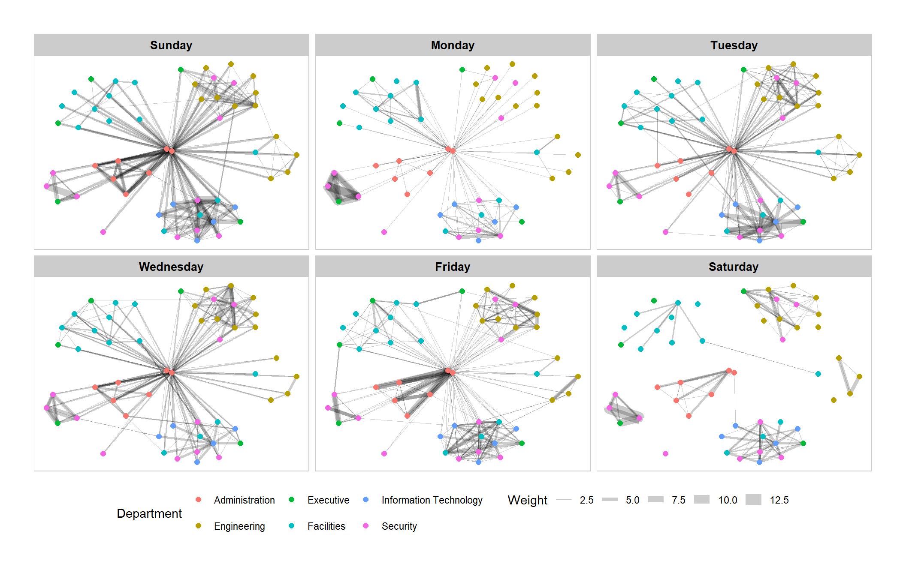
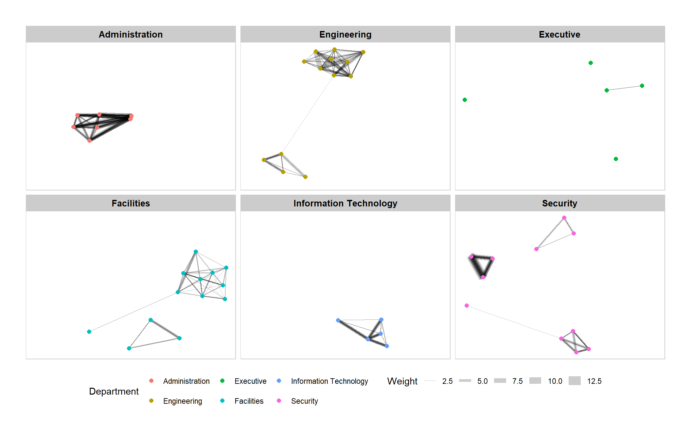
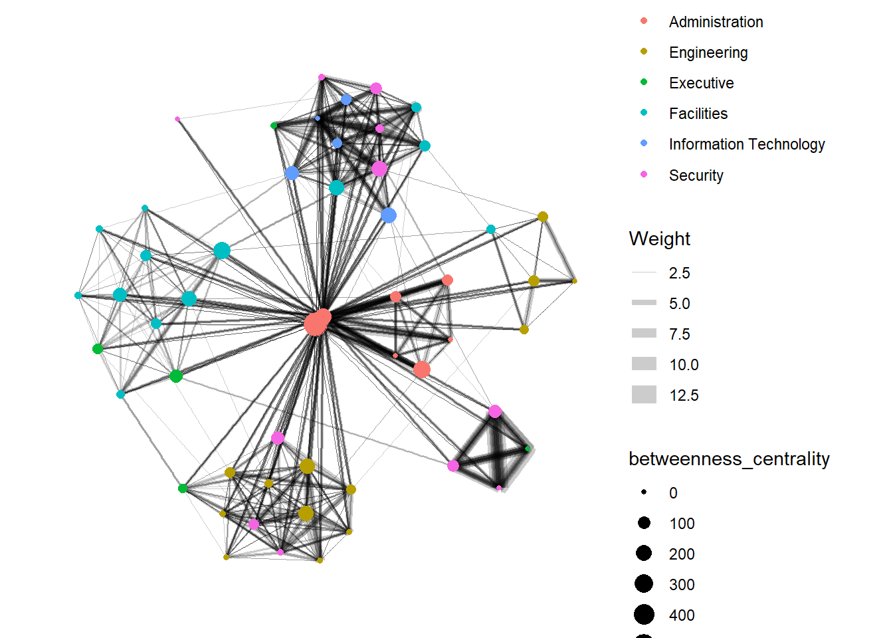
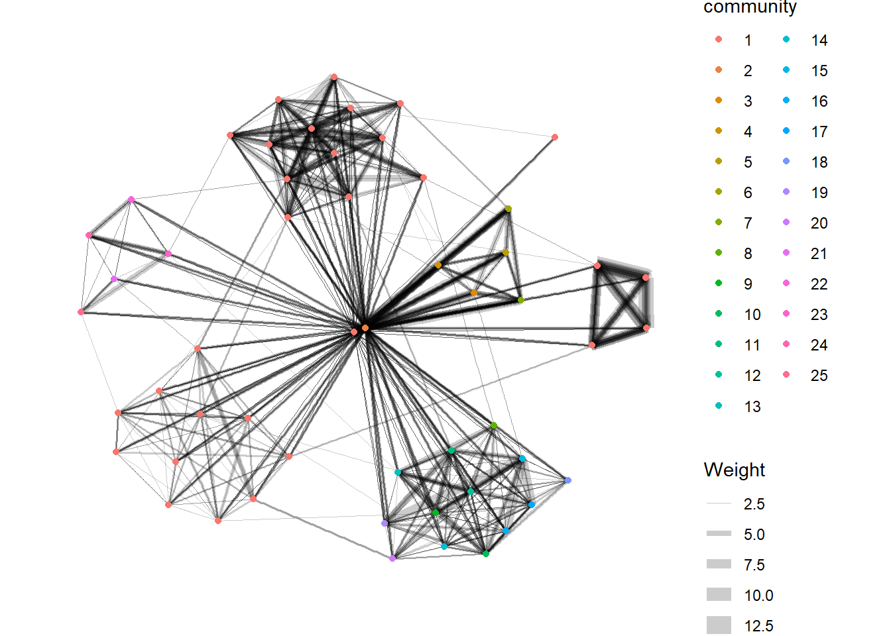
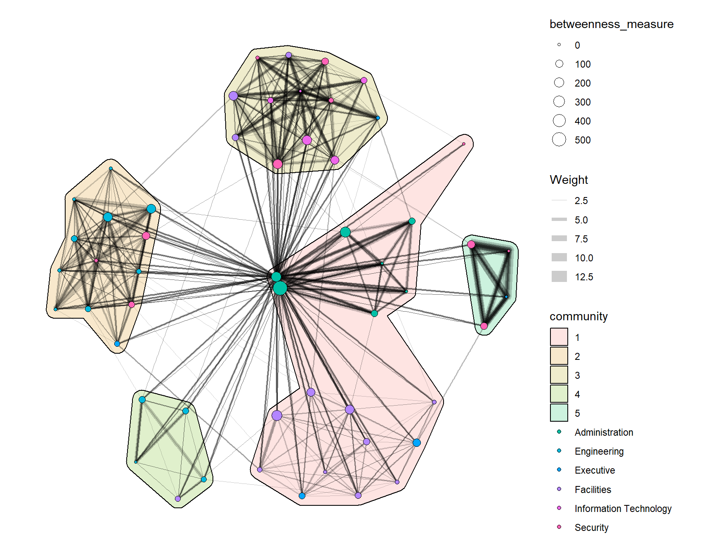
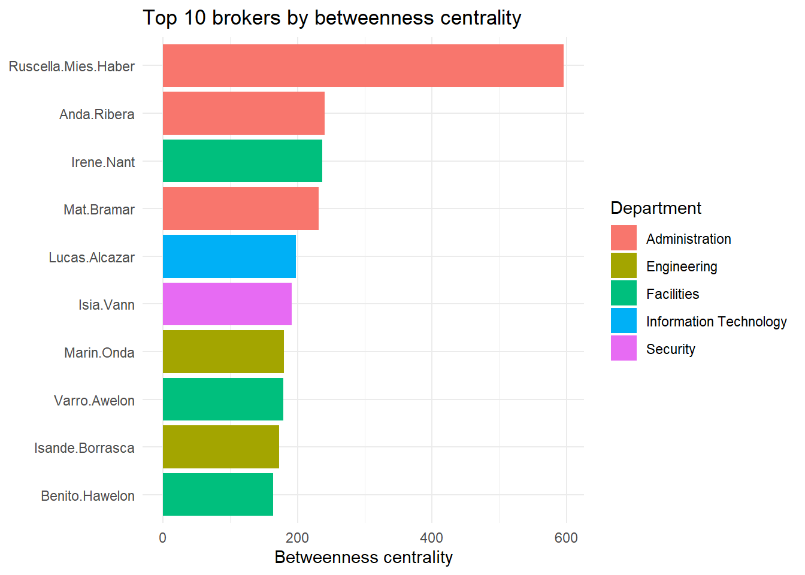
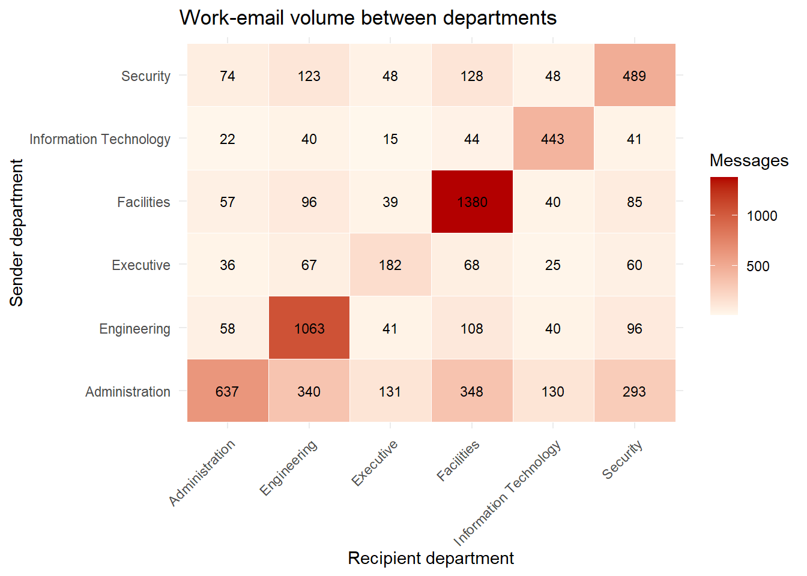
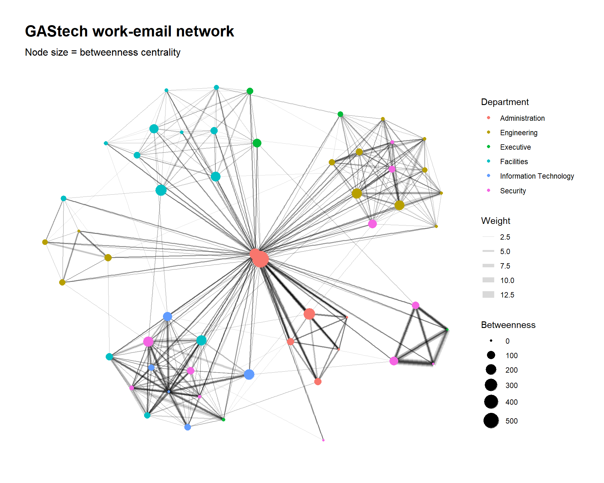

Hands-on Exercise 7-A:
Modelling, Visualising and Analysing Network Data with R
1 Overview
This hands-on exercise covers Chapter 27: Modelling, Visualising and Analysing Network Data with R.
By the end of this exercise, I will be able to:
create graph object data frames, manipulate them using appropriate functions of dplyr, lubridate, and tidygraph,
build network graph visualisation using appropriate functions of ggraph,
compute network geometrics using tidygraph,
build advanced graph visualisation by incorporating the network geometrics, and
build interactive network visualisation using visNetwork package.
2 Getting Started
2.1 Loading the required packages
For this exercise we will use the following R packages:
igraph, tidygraph, ggraph and visNetwork for modelling and visualising network data,
graphlayouts for additional network layouts,
lubridate and clock for wrangling dates and times,
concaveman and ggforce for drawing community hulls,
DT for interactive tables (used in the Extras), and
tidyverse for general data wrangling and plotting.
2.2 Importing Data
2.2.1 About the data set
GAStech-email_edges.csv consists of two weeks of 9063 email correspondences between 55 employees.
This becomes the edges (lines) in our network.

GAStech_email_nodes.csv consists of the names, department and title of the 55 employees.
This becomes the nodes (points) in our network.

2.2.2 Importing the data
We will import the data using read_csv() of readr.
2.2.3 Initial look at the data
# A tibble: 6 × 4
id label Department Title
<dbl> <chr> <chr> <chr>
1 1 Mat.Bramar Administration Assistant to CEO
2 2 Anda.Ribera Administration Assistant to CFO
3 3 Rachel.Pantanal Administration Assistant to CIO
4 4 Linda.Lagos Administration Assistant to COO
5 5 Ruscella.Mies.Haber Administration Assistant to Engineering Group Manag…
6 6 Carla.Forluniau Administration Assistant to IT Group Manager Contains the list of employees and their role information (id, label, Department, Title).
# A tibble: 6 × 8
source target SentDate SentTime Subject MainSubject sourceLabel targetLabel
<dbl> <dbl> <chr> <time> <chr> <chr> <chr> <chr>
1 43 41 6/1/2014 08:39 GT-Seismi… Work relat… Sven.Flecha Isak.Baza
2 43 40 6/1/2014 08:39 GT-Seismi… Work relat… Sven.Flecha Lucas.Alca…
3 44 51 6/1/2014 08:58 Inspectio… Work relat… Kanon.Herr… Felix.Resu…
4 44 52 6/1/2014 08:58 Inspectio… Work relat… Kanon.Herr… Hideki.Coc…
5 44 53 6/1/2014 08:58 Inspectio… Work relat… Kanon.Herr… Inga.Ferro
6 44 45 6/1/2014 08:58 Inspectio… Work relat… Kanon.Herr… Varja.LagosContains individual messages sent from one person to another.
3 Data Wrangling
3.1 Reviewing the edges data
Rows: 9,063
Columns: 8
$ source <dbl> 43, 43, 44, 44, 44, 44, 44, 44, 44, 44, 44, 44, 26, 26, 26…
$ target <dbl> 41, 40, 51, 52, 53, 45, 44, 46, 48, 49, 47, 54, 27, 28, 29…
$ SentDate <chr> "6/1/2014", "6/1/2014", "6/1/2014", "6/1/2014", "6/1/2014"…
$ SentTime <time> 08:39:00, 08:39:00, 08:58:00, 08:58:00, 08:58:00, 08:58:0…
$ Subject <chr> "GT-SeismicProcessorPro Bug Report", "GT-SeismicProcessorP…
$ MainSubject <chr> "Work related", "Work related", "Work related", "Work rela…
$ sourceLabel <chr> "Sven.Flecha", "Sven.Flecha", "Kanon.Herrero", "Kanon.Herr…
$ targetLabel <chr> "Isak.Baza", "Lucas.Alcazar", "Felix.Resumir", "Hideki.Coc…3.2 Converting dates to Date datatype
We will add 2 columns to GAStech_edges: SendDate (date parsed in DMY format) and Weekday (the day of the week). These are generated from SentDate using lubridate functions.
Checking that GAStech_edges now has these new columns.
Rows: 9,063
Columns: 10
$ source <dbl> 43, 43, 44, 44, 44, 44, 44, 44, 44, 44, 44, 44, 26, 26, 26…
$ target <dbl> 41, 40, 51, 52, 53, 45, 44, 46, 48, 49, 47, 54, 27, 28, 29…
$ SentDate <chr> "6/1/2014", "6/1/2014", "6/1/2014", "6/1/2014", "6/1/2014"…
$ SentTime <time> 08:39:00, 08:39:00, 08:58:00, 08:58:00, 08:58:00, 08:58:0…
$ Subject <chr> "GT-SeismicProcessorPro Bug Report", "GT-SeismicProcessorP…
$ MainSubject <chr> "Work related", "Work related", "Work related", "Work rela…
$ sourceLabel <chr> "Sven.Flecha", "Sven.Flecha", "Kanon.Herrero", "Kanon.Herr…
$ targetLabel <chr> "Isak.Baza", "Lucas.Alcazar", "Felix.Resumir", "Hideki.Coc…
$ SendDate <date> 2014-01-06, 2014-01-06, 2014-01-06, 2014-01-06, 2014-01-0…
$ Weekday <ord> Friday, Friday, Friday, Friday, Friday, Friday, Friday, Fr…3.3 Aggregating data
The raw edges data is not directly useful for network analysis as it contains individual correspondence. We instead want to know how many messages are sent between 2 people.
Rows: 1,372
Columns: 4
$ source <dbl> 1, 1, 1, 1, 1, 1, 1, 1, 1, 1, 1, 1, 1, 1, 1, 1, 1, 1, 1, 1, 1,…
$ target <dbl> 2, 2, 2, 2, 2, 3, 3, 3, 3, 3, 4, 4, 4, 4, 4, 5, 5, 5, 5, 5, 6,…
$ Weekday <ord> Sunday, Monday, Tuesday, Wednesday, Friday, Sunday, Monday, Tu…
$ Weight <int> 5, 2, 3, 4, 6, 5, 2, 3, 4, 6, 5, 2, 3, 4, 6, 5, 2, 3, 4, 6, 5,…With this change we now know how many messages are sent between 2 people on each day of the week. We will use this data frame for analysing and visualising the network.
4 Creating network objects using tidygraph
tidygraph provides a tidy API for graph/network manipulation. While network data itself is not tidy, it can be envisioned as two tidy tables — one for node data and one for edge data. tidygraph provides a way to switch between the two tables and provides dplyr verbs for manipulating them.
References:
4.1 The tbl_graph object
Two functions of tidygraph can be used to create network objects:
tbl_graph()creates a tbl_graph network object from nodes and edges data.as_tbl_graph()converts network data and objects (igraph, network, data.frame, dendrogram, etc.) into a tbl_graph network.
4.2 The dplyr verbs in tidygraph
- activate() serves as a switch between the tibbles for nodes and edges. All dplyr verbs applied to a tbl_graph object are applied to the active tibble.

- .N() gives access to the node data while manipulating edge data. Similarly .E() gives the edge data and .G() gives the tbl_graph object itself.
4.3 Using tbl_graph() to build tidygraph data model
This is a directed graph, so the direction of the messages is relevant.
4.4 Getting to know the output
# A tbl_graph: 54 nodes and 1372 edges
#
# A directed multigraph with 1 component
#
# Node Data: 54 × 4 (active)
id label Department Title
<dbl> <chr> <chr> <chr>
1 1 Mat.Bramar Administration Assistant to CEO
2 2 Anda.Ribera Administration Assistant to CFO
3 3 Rachel.Pantanal Administration Assistant to CIO
4 4 Linda.Lagos Administration Assistant to COO
5 5 Ruscella.Mies.Haber Administration Assistant to Engineering Group Mana…
6 6 Carla.Forluniau Administration Assistant to IT Group Manager
7 7 Cornelia.Lais Administration Assistant to Security Group Manager
8 44 Kanon.Herrero Security Badging Office
9 45 Varja.Lagos Security Badging Office
10 46 Stenig.Fusil Security Building Control
# ℹ 44 more rows
#
# Edge Data: 1,372 × 4
from to Weekday Weight
<int> <int> <ord> <int>
1 1 2 Sunday 5
2 1 2 Monday 2
3 1 2 Tuesday 3
# ℹ 1,369 more rowsGAStech_graph is a tbl_graph object with 54 nodes and 1456 edges.
It prints the first six rows of “Node Data” and the first three of “Edge Data”.
The Node Data is active. The notion of an active tibble makes it possible to manipulate one tibble at a time.
4.5 Changing the active object
The nodes tibble is active by default, but we can change this with activate(). To list the edges with the highest weight first:
# A tbl_graph: 54 nodes and 1372 edges
#
# A directed multigraph with 1 component
#
# Edge Data: 1,372 × 4 (active)
from to Weekday Weight
<int> <int> <ord> <int>
1 40 41 Saturday 13
2 41 43 Monday 11
3 35 31 Tuesday 10
4 40 41 Monday 10
5 40 43 Monday 10
6 36 32 Sunday 9
7 40 43 Saturday 9
8 41 40 Monday 9
9 19 15 Wednesday 8
10 35 38 Tuesday 8
# ℹ 1,362 more rows
#
# Node Data: 54 × 4
id label Department Title
<dbl> <chr> <chr> <chr>
1 1 Mat.Bramar Administration Assistant to CEO
2 2 Anda.Ribera Administration Assistant to CFO
3 3 Rachel.Pantanal Administration Assistant to CIO
# ℹ 51 more rows5 Plotting Static Network Graphs with ggraph package
ggraph is an extension of ggplot2, making it easier to carry over basic ggplot skills to the design of network graphs. There are three main aspects to a ggraph network graph:
5.1 Plotting a basic network graph
The code chunk below uses ggraph(), geom_edge_link() and geom_node_point() to plot a basic network graph.

5.2 Changing the default network graph theme
Here we use theme_graph() to remove the x and y axes.

5.3 Changing the coloring of the plot
theme_graph() also makes it easy to change the colouring of the plot.

5.4 Working with ggraph’s layouts
ggraph supports many layouts: star, circle, nicely (default), dh, gem, graphopt, grid, mds, sphere, randomly, fr, kk, drl and lgl.


5.5 Different graph layouts
The code chunks below plot the network graph using different layouts.
Other documentation:
https://cran.r-project.org/web/packages/ggraph/vignettes/Layouts.html
https://ggraph.data-imaginist.com/reference/layout_tbl_graph_igraph.html
5.6 Modifying network nodes
We will colour the nodes according to the Department.
5.7 Modifying edges
We will modify the thickness of the edges based on Weight.
6 Creating facet graphs
Faceting is a useful feature of ggraph. It can reduce edge over-plotting by spreading nodes and edges out based on their attributes. There are three functions:
facet_nodes() — edges are only drawn in a panel if both terminal nodes are present,
facet_edges() — nodes are always drawn in all panels, and
facet_graph() — facets on two variables simultaneously.
6.1 Working with facet_edges()
We can create facets for each day of the week using the Weekday column.
6.2 Changing the legend position
We can change the position of the legend through the theme() function.
6.3 Adding a frame to each facet
set_graph_style()
g <- ggraph(GAStech_graph,
layout = "nicely") +
geom_edge_link(aes(width = Weight),
alpha = 0.2) +
scale_edge_width(range = c(0.1, 5)) +
geom_node_point(aes(colour = Department),
size = 2)
g + facet_edges(~Weekday) +
th_foreground(foreground = "grey80",
border = TRUE) +
theme(legend.position = 'bottom')
6.4 Working with facet_nodes()
We can also facet by nodes. Here we facet by Department.
set_graph_style()
g <- ggraph(GAStech_graph,
layout = "nicely") +
geom_edge_link(aes(width = Weight),
alpha = 0.2) +
scale_edge_width(range = c(0.1, 5)) +
geom_node_point(aes(colour = Department),
size = 2)
g + facet_nodes(~Department) +
th_foreground(foreground = "grey80",
border = TRUE) +
theme(legend.position = 'bottom')
7 Network Metrics Analysis
7.1 Computing centrality indices
Centrality measures are a collection of statistical indices used to describe the relative importance of the actors in a network. Four well-known measures are: degree, betweenness, closeness and eigenvector.

7.2 Visualising network metrics
From ggraph v2.0 onward, the centrality measure can be computed directly inside aes(), without pre-computing a column.
7.3 Visualising Community
Communities are groups of nodes that are closely knit. The measure of being closely knit is the Weight column in our graph.
Reference: https://towardsdatascience.com/community-detection-algorithms-9bd8951e7dae

7.3.1 Marking communities with hulls
The most recent version of the chapter adds an advanced community visualisation that draws a hull around each community using geom_mark_hull() of ggforce (which relies on concaveman). Communities are detected here with group_optimal() and node size is scaled by betweenness.
g <- GAStech_graph %>%
activate(nodes) %>%
mutate(community = as.factor(group_optimal(weights = Weight)),
betweenness_measure = centrality_betweenness()) %>%
ggraph(layout = "fr") +
geom_mark_hull(
aes(x, y,
group = community,
fill = community),
alpha = 0.2,
expand = unit(0.3, "cm"),
radius = unit(0.3, "cm")
) +
geom_edge_link(aes(width = Weight),
alpha = 0.2) +
scale_edge_width(range = c(0.1, 5)) +
geom_node_point(aes(fill = Department,
size = betweenness_measure),
color = "black",
shape = 21)
g + theme_graph()
8 Building interactive network graph with visNetwork
8.1 Data preparation
Before plotting the interactive graph, we prepare a data model whose edges reference the node ids. We join the edge and node data frames to recover the from/to ids from the labels.
GAStech_edges_aggregated <- GAStech_edges %>%
left_join(GAStech_nodes, by = c("sourceLabel" = "label")) %>%
rename(from = id) %>%
left_join(GAStech_nodes, by = c("targetLabel" = "label")) %>%
rename(to = id) %>%
filter(MainSubject == "Work related") %>%
group_by(from, to) %>%
summarise(weight = n()) %>%
filter(from != to) %>%
filter(weight > 1) %>%
ungroup()8.2 Plotting the first interactive network graph
8.3 Working with layout
We can change the layout of the interactive graph. Here the Fruchterman and Reingold layout is used.
8.4 Working with visual attributes - Nodes
visNetwork() looks for a field called “group” in the nodes object and colours the nodes according to its values. Following the updated chapter, we rename Department to group.
After adding the group column, we can replot with a legend.
8.5 Working with visual attributes - Edges
In the code below visEdges() is used to symbolise the edges.
- The argument arrows defines where to place the arrow.
- The smooth argument plots the edges using a smooth curve.
8.6 Adding Interactivity
visOptions() incorporates interactivity features:
highlightNearest highlights nearest nodes when clicking a node.
nodesIdSelection adds an id node selection (an HTML select element).
9 Extras
Beyond the guided exercise, I explored five additional analyses to deepen the network story. Each one reuses the GAStech_graph and data frames built above.
9.1 A full centrality scorecard
Instead of looking at betweenness alone, I compute five centrality measures with tidygraph and present them in a searchable, sortable DT table. This lets us identify who matters in the network from several angles at once.
centrality_tbl <- GAStech_graph %>%
activate(nodes) %>%
mutate(degree = centrality_degree(mode = "all"),
betweenness = centrality_betweenness(),
closeness = centrality_closeness(),
eigen = centrality_eigen(weights = NULL),
pagerank = centrality_pagerank()) %>%
as_tibble() %>%
select(label, Department, Title,
degree, betweenness, closeness, eigen, pagerank) %>%
arrange(desc(betweenness))
datatable(centrality_tbl,
filter = "top",
caption = "Centrality scorecard for all 54 employees",
options = list(pageLength = 10)) %>%
formatRound(c("betweenness", "closeness", "eigen", "pagerank"), 3)A high betweenness with a modest degree flags a broker — someone who bridges otherwise separate parts of the organisation.
9.2 Who are the top brokers?
I rank the 10 employees with the highest betweenness centrality and colour them by department. These are the people whose absence would most fragment internal communication.
top_brokers <- GAStech_graph %>%
activate(nodes) %>%
mutate(betweenness = centrality_betweenness()) %>%
as_tibble() %>%
slice_max(betweenness, n = 10)
ggplot(top_brokers,
aes(x = reorder(label, betweenness),
y = betweenness,
fill = Department)) +
geom_col() +
coord_flip() +
labs(title = "Top 10 brokers by betweenness centrality",
x = NULL, y = "Betweenness centrality") +
theme_minimal()
9.3 Department-to-department communication heatmap
Networks can also be read as matrices. Here I aggregate the work-related emails by the sender’s and recipient’s department and draw a heatmap, revealing which departments talk to each other the most.
dept_matrix <- GAStech_edges %>%
filter(MainSubject == "Work related") %>%
left_join(GAStech_nodes %>% select(label, from_dept = group),
by = c("sourceLabel" = "label")) %>%
left_join(GAStech_nodes %>% select(label, to_dept = group),
by = c("targetLabel" = "label")) %>%
count(from_dept, to_dept, name = "messages")
ggplot(dept_matrix,
aes(x = to_dept, y = from_dept, fill = messages)) +
geom_tile(colour = "white") +
geom_text(aes(label = messages), size = 3) +
scale_fill_gradient(low = "#fff7ec", high = "#b30000") +
labs(title = "Work-email volume between departments",
x = "Recipient department", y = "Sender department",
fill = "Messages") +
theme_minimal() +
theme(axis.text.x = element_text(angle = 45, hjust = 1))
The strong diagonal confirms that most communication stays within departments, but the off-diagonal cells expose the cross-team channels.
9.4 Comparing community-detection algorithms
The guided exercise used edge-betweenness and optimal-modularity communities. Different algorithms can disagree, so I compare three popular methods on an undirected version of the graph and visualise each in a tabset.
# Collapse the directed graph into a *simple* undirected graph: the parallel
# A->B / B->A edges are merged and their Weights summed. This matters because
# cluster_fast_greedy() (and friends) reject multi-edges.
GAStech_undirected <- GAStech_graph %>%
igraph::as_undirected(mode = "collapse",
edge.attr.comb = list(Weight = "sum", "ignore")) %>%
as_tbl_graph()
plot_community <- function(graph, group_col, title) {
graph %>%
ggraph(layout = "fr") +
geom_edge_link(aes(width = Weight), alpha = 0.15) +
scale_edge_width(range = c(0.1, 4)) +
geom_node_point(aes(colour = {{ group_col }}), size = 4) +
labs(title = title, colour = "Community") +
theme_graph()
}How many communities did each method find?
community_sizes <- tibble(
Louvain = GAStech_undirected %>% mutate(c = group_louvain(weights = Weight)) %>% pull(c) %>% n_distinct(),
Infomap = GAStech_undirected %>% mutate(c = group_infomap()) %>% pull(c) %>% n_distinct(),
`Fast-greedy`= GAStech_undirected %>% mutate(c = group_fast_greedy(weights = Weight)) %>% pull(c) %>% n_distinct()
)
community_sizes# A tibble: 1 × 3
Louvain Infomap `Fast-greedy`
<int> <int> <int>
1 4 6 49.5 An interactive dashboard + autosaved figure
Finally I build a richer visNetwork dashboard where node size encodes degree centrality, hovering shows a tooltip with the person’s title and department, and the user can filter by department or highlight a node’s neighbourhood. I also ggsave() a high-resolution static version to images/ so there is a saved image artefact on disk.
# degree of every node, in graph order
node_degree <- GAStech_graph %>%
activate(nodes) %>%
mutate(deg = centrality_degree(mode = "all")) %>%
pull(deg)
vis_nodes <- GAStech_nodes %>%
mutate(value = node_degree,
title = paste0("<b>", label, "</b><br>",
"Title: ", Title, "<br>",
"Dept: ", group))
visNetwork(vis_nodes,
GAStech_edges_aggregated,
main = "GAStech work-email network — interactive dashboard") %>%
visIgraphLayout(layout = "layout_with_fr") %>%
visEdges(arrows = "to",
smooth = list(enabled = TRUE, type = "curvedCW"),
color = list(opacity = 0.4)) %>%
visOptions(highlightNearest = list(enabled = TRUE, degree = 1, hover = TRUE),
nodesIdSelection = TRUE,
selectedBy = "group") %>%
visLegend() %>%
visInteraction(navigationButtons = TRUE) %>%
visLayout(randomSeed = 123)A static, publication-quality version is rendered below and saved to disk with ggsave():
if (!dir.exists("images")) dir.create("images")
pub_plot <- GAStech_graph %>%
mutate(betweenness = centrality_betweenness()) %>%
ggraph(layout = "fr") +
geom_edge_link(aes(width = Weight), alpha = 0.15) +
scale_edge_width(range = c(0.1, 4)) +
geom_node_point(aes(colour = Department, size = betweenness)) +
scale_size(range = c(1, 9)) +
labs(title = "GAStech work-email network",
subtitle = "Node size = betweenness centrality",
colour = "Department", size = "Betweenness") +
theme_graph()
ggsave("images/HO_EX07A_network.png", pub_plot,
width = 10, height = 8, dpi = 300, bg = "white")
pub_plot
On render, every figure in this document is also automatically written by knitr to the HO_EX07A_files/figure-html/ folder, and the dashboard figure above is explicitly saved to images/HO_EX07A_network.png.
10 Reference
- Kam, T.S. (2024). Modelling, Visualising and Analysing Network Data with R. R for Visual Analytics.